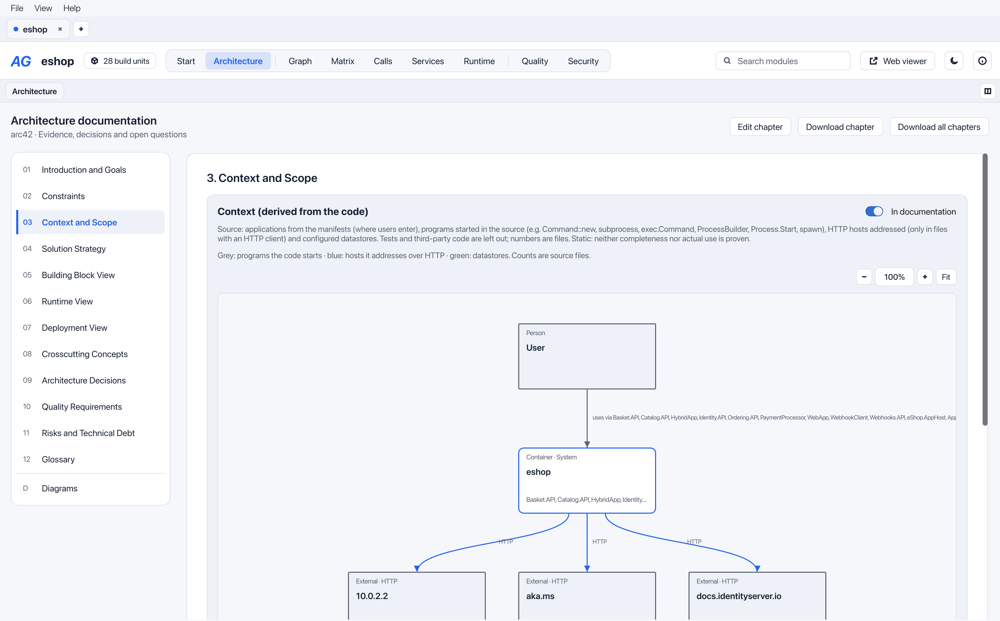

arc42 am Code halten
Aktualisiere die Belege in zwölf arc42-Kapiteln und erhalte geschützte manuelle Texte. Exportiere Markdown, AsciiDoc oder Word; die Begründung der Entscheidungen bleibt in deinen Worten.
Wenn sich die Implementierung ändert, braucht die Architekturdokumentation mehr als Erinnerungen. Beginne mit Quellbelegen und ergänze die Absichten, die nur dein Team erklären kann.
Fehlende Evidenz ist nicht null. Sieh, was gemessen wurde, was abgeleitet ist und was unbekannt bleibt.
Aktualisiere die Belege in zwölf arc42-Kapiteln und erhalte geschützte manuelle Texte. Exportiere Markdown, AsciiDoc oder Word; die Begründung der Entscheidungen bleibt in deinen Worten.
Definiere logische Komponenten und erlaubte Abhängigkeitsrichtungen. Vergleiche das Modell mit tatsächlichen Imports und ordne Qualitätsziele den verfügbaren Belegen zu.
Vergleiche Git-Stände, prüfe KPI-Deltas und halte Review-Entscheidungen mit ihrer Begründung fest. Die Projektregeln können für ein akzeptiertes Risiko einen ADR verlangen.
Das vorhandene eShop-Beispiel zeigt die Service-Landkarte und Quellbelege für abgeleitete Ereignisbeziehungen. Seine arc42-Kontextsicht eröffnet die Entwurfsdiskussion; Geschäftsziele und Entscheidungen kommen weiterhin von Menschen.

Echter Desktop-Capture · Microsoft eShop · Kontextabgrenzung
Das versionierte eShop-Beispiel ansehen (EN)Führe den Befehl nach der Installation von ArchGuard im Stammverzeichnis des ArchGuard-Repositories aus. Service Shop ist enthalten; Container werden nicht benötigt. Der Befehl gibt das erzeugte arc42-Dokument aus.
Zur Dokumentation (EN)archguard doc examples/service-shop --arc42 --stdoutEin Diagramm beschreibt den verfügbaren Code und die Konfiguration. Es ergänzt keine fehlende Architekturentscheidung. Ein Qualitätsziel ohne Findings ist kein Nachweis, dass das Ziel erfüllt ist. Im Word-Export bleiben Diagramme Quelltext; Rendering und Confluence-Import sind eigene Schritte.